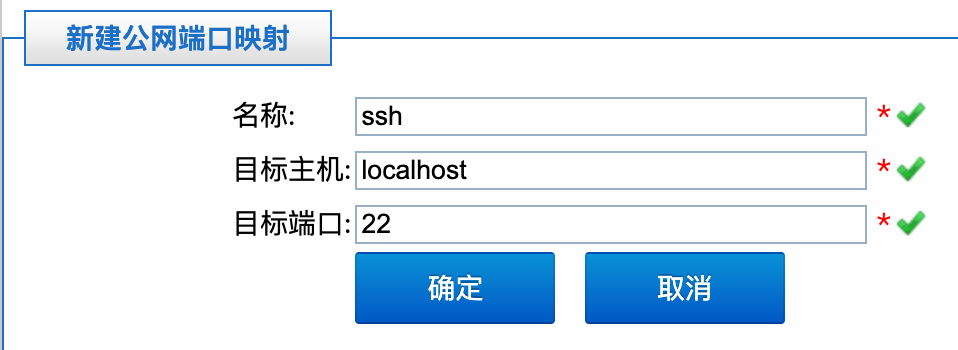
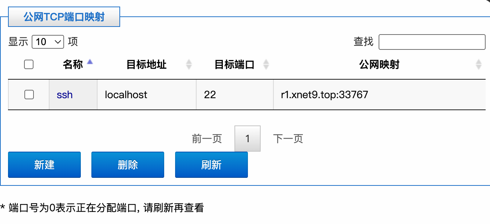

配置路径: "公网服务-端口映射"。
点击"新建", 添加一个端口映射

说明:
| 名称 | 本条映射规则的名称 |
| 密码 | 系统随机生成初始默认密码, 建议将其改为自己的密码 |
| 目标主机 | 目标主机名或IP |
| 目标端口 | 目标主机的服务端口号。例如ssh为22, Windows远程桌面为3389 |
配置完成后, 点击"确定"提交配置, 跳转到如下界面:

图中"公网映射"的IP:Port即为映射后的公网IP和端口. 此时用户可以在公网访问此服务, 例如访问此ssh:
ssh r1.xnet9.top -p 33767
配置视图： config-view -> xnetc-view
使用示例:
xnetc-view>public-service tcp ssh localhost:22 -e
xnetc-view>show public-service tcp
Name:ssh,Target:localhost,Target_Port:22,PublicService:17.178.124.20:46683,Enbale:1
xnetc-view>no public-service tcp ssh
命令说明:
| public-service tcp %NAME %TARGET %OPTION | 配置一条TCP域名映射%NAME 规则名称, 例如: ssh %TARGET 目标地址和端口, 例如: localhost:22 选项: -e --enable 使能规则 |
| show public-service tcp | 显示TCP端口映射列表 |
| no public-service tcp %NAME | 删除名称为%NAME的TCP端口映射规则 |
如果端口号为0, 则表示服务器正在为其分配端口号, 稍等后重新刷新或查看, 即可看到分配后的端口号